Contents
Low Energy Mission
Earth to moon transfer ------------------------------------------------------------------------ See also: LagrangePointsL1ToL5, PlanetPositionEMBarycenter, LowEnergyTransferInCRTBP, PlotLET3BP, Targeting3BP2, Targeting4BP, PlotLET, PlotLET3BP, MinE4BP ------------------------------------------------------------------------
%-------------------------------------------------------------------------- % Copyright (c) 2018 Princeton Satellite Systems, Inc. % All rights reserved. %-------------------------------------------------------------------------- % Since 2018.1 %--------------------------------------------------------------------------
Problem definition and setup
jDate = JD2000+1; r0 = 7500; % km planet = 'Earth'; moon = 'Moon'; saveFiles = false; tRun = tic; % Get body parameters %-------------------- muPlanet = Constant(['mu ',planet]); muMoon = Constant(['mu ',moon ]); muSun = Constant( 'mu Sun' ); muCRTBP = (muMoon + muPlanet) / (muMoon + muPlanet + muSun); p = LagrangePointsL1ToL5( muMoon/(muPlanet + muMoon) ); p = [-p(:,1) + [muMoon/(muPlanet + muMoon)-1 ;0];0];
Determine orientation
%---------------------- PlanetPositionEMBarycenter('initialize',[0,3,10]) [r,v] = PlanetPositionEMBarycenter('update',jDate); sunState = [r(:,1);v(:,1)]; planetState = [r(:,2);v(:,2)]; moonState = [r(:,3);v(:,3)] + planetState-sunState; elements = RV2El(sunState(1:3),sunState(4:6),muSun); moonStateRotated = J20002RotPuls(moonState,sunState,muSun); distanceUnit = elements(1); relStatePM = moonState - planetState; elementsPM = RV2El(relStatePM(1:3),relStatePM(4:6),muPlanet+muMoon); p = Mag(p * elementsPM(1)); if moonStateRotated(1) < 0 orientation = ''; else orientation = 'p'; end
Get LET in CRTBP
%----------------- tic h = waitbar(0,'LET Status: Solving for Low Energy Transfer in CRTBP \newline Step 1/5 : Approximately 6 min remaining'); scaleFactor = muPlanet/(muMoon+muPlanet); LET = LowEnergyTransferInCRTBP(r0/scaleFactor/distanceUnit,(Mag(moonState(1:3)-planetState(1:3)))/distanceUnit,muCRTBP,orientation); family = LET.family; fprintf('Using family %s\n',family); toc
Beginning optimization in PeriodicOrbitFromGuess
Max Line search Directional First-order
Iter F-count f(x) constraint steplength derivative optimality Procedure
0 3 0 5.373e-07 Infeasible start point
1 6 0 3.424e-10 1 0 0.00152
Local minimum found that satisfies the constraints.
Optimization completed because the objective function is non-decreasing in
feasible directions, to within the value of the optimality tolerance,
and constraints are satisfied to within the value of the constraint tolerance.
Iteration 0 of LowEnergyTransferInCRTBP
Iteration 1 of get_c
Iteration 2 of get_c
Iteration 3 of get_c
Iteration 4 of get_c
Iteration 5 of get_c
Iteration 1 of LowEnergyTransferInCRTBP
Iteration 1 of get_c
Iteration 2 of get_c
Iteration 3 of get_c
Iteration 4 of get_c
Iteration 5 of get_c
Iteration 2 of LowEnergyTransferInCRTBP
Iteration 1 of get_c
Iteration 2 of get_c
Iteration 3 of get_c
Iteration 4 of get_c
Iteration 5 of get_c
Iteration 3 of LowEnergyTransferInCRTBP
Iteration 1 of get_c
Iteration 2 of get_c
Iteration 3 of get_c
Iteration 4 of get_c
Iteration 5 of get_c
Using family f16
Elapsed time is 1.895565 seconds.
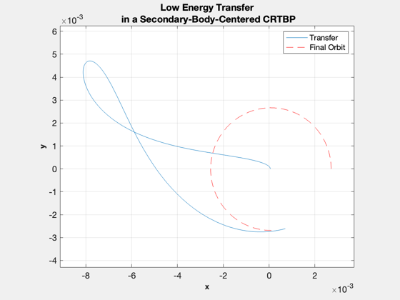 Phasing
%-------- waitbar(.2,h,'LET Status: Estimating Transfer Time \newline Step 2/5 : Approximately 5.5 min remaining') desiredPhasing = LET.theta2 - pi/15; [initialStateEph,sec2tu] = CRTBP2kms(LET.initialState,distanceUnit,muSun,muMoon+muPlanet); x0 = LET.tF/sec2tu; debugData.x0 = x0; [x,orbits] = LETPhasing(x0,desiredPhasing,moon,planet,0,jDate); dtTarg = x ; debugData.dtTarg = dtTarg; fprintf('Phasing requires %f lunar orbits\n',orbits);
Phasing requires 3.573531 lunar orbits
Transfer to 3BP
%---------------- waitbar(.4,h,'LET Status: Transferring to MKS Sun/Earth System \newline Step 3/5 : Approximately 4.5 min remaining') %[initialStateEph] = CRTBP2kms(LET.initialState,distanceUnit,muSun,muMoon+muPlanet); [r,v] = PlanetPositionEMBarycenter('update',jDate); sunState = [r(:,1);v(:,1)]; [initialStateEph] = RotPuls2J2000(initialStateEph,sunState,muSun); dV1Eph = CRTBP2kms([LET.initialState(1:3);LET.dV1],distanceUnit,muSun,muMoon+muPlanet); dV1Eph = RotPuls2J2000(dV1Eph,sunState,muSun); dV1Eph = Mag(dV1Eph(4:6));%*.9995; % TEMP fprintf('Performing targeting for the 3 body problem...\n'); tic elements0 = RV2El(initialStateEph(1:3),initialStateEph(4:6),muMoon+muPlanet); figH1 = PlotLET3BP(elements0,dV1Eph,dtTarg,jDate); set(figH1(1),'name',strcat(get(figH1(1),'name'),' BEFORE')) set(figH1(2),'name',strcat(get(figH1(2),'name'),' BEFORE')) debugData.pre3BP.elements = elements0; debugData.pre3BP.dV1Eph = dV1Eph; [elements,dV1New] = Targeting3BP2(elements0,dV1Eph,dtTarg,0,muMoon,jDate); toc debugData.post3BP.elements = elements; debugData.post3BP.dV1Eph = dV1New; figH2 = PlotLET3BP(elements,dV1New,dtTarg,jDate); % remove handle set(figH2(1),'name',strcat(get(figH2(1),'name'),' AFTER')) set(figH2(2),'name',strcat(get(figH2(2),'name'),' AFTER'))
Performing targeting for the 3 body problem...
Iteration Func-count f(x) Procedure
0 1 36.6793
1 5 36.6793 initial simplex
2 7 36.6177 expand
3 8 36.6177 reflect
4 10 36.5215 expand
5 11 36.5215 reflect
6 13 36.3766 expand
7 14 36.3766 reflect
8 16 36.1473 expand
9 17 36.1473 reflect
10 19 35.7832 expand
11 20 35.7832 reflect
12 22 35.2104 expand
13 23 35.2104 reflect
14 25 34.3157 expand
15 26 34.3157 reflect
16 28 32.9161 expand
17 29 32.9161 reflect
18 31 30.7028 expand
19 32 30.7028 reflect
20 34 27.2464 expand
21 35 27.2464 reflect
22 37 21.7894 expand
23 38 21.7894 reflect
24 40 13.4259 expand
25 41 13.4259 reflect
26 43 1.88495 expand
27 44 1.88495 reflect
28 46 0.464621 reflect
29 47 0.464621 reflect
30 49 0.464621 contract outside
31 51 0.464621 contract inside
32 53 0.464621 contract inside
33 55 0.464621 contract inside
34 57 0.464621 contract inside
35 59 0.388453 contract inside
36 61 0.308356 contract inside
37 63 0.308356 contract outside
38 65 0.279439 contract inside
39 67 0.258011 contract inside
40 69 0.235698 contract inside
41 70 0.235698 reflect
42 72 0.235042 contract inside
43 74 0.226792 contract inside
44 75 0.226792 reflect
45 77 0.226636 contract inside
46 79 0.226289 contract outside
47 81 0.224345 contract inside
48 83 0.223525 contract inside
49 85 0.221908 contract inside
50 86 0.221908 reflect
51 88 0.221908 contract inside
52 90 0.221789 contract inside
53 92 0.2216 contract outside
54 94 0.221398 contract inside
55 96 0.221398 contract outside
56 97 0.221398 reflect
57 99 0.221077 reflect
58 101 0.221077 contract inside
59 103 0.221077 contract inside
60 105 0.221036 reflect
61 107 0.221036 contract outside
62 109 0.220642 expand
63 111 0.220416 expand
64 112 0.220416 reflect
65 114 0.220021 expand
66 116 0.219472 expand
67 117 0.219472 reflect
68 119 0.217954 expand
69 121 0.216471 expand
70 122 0.216471 reflect
71 123 0.216471 reflect
72 125 0.211606 expand
73 126 0.211606 reflect
74 128 0.208903 expand
75 129 0.208903 reflect
76 131 0.198943 expand
77 132 0.198943 reflect
78 133 0.198943 reflect
79 135 0.189076 expand
80 136 0.189076 reflect
81 138 0.178561 expand
82 140 0.166117 expand
83 141 0.166117 reflect
84 143 0.153891 expand
85 144 0.153891 reflect
86 145 0.153891 reflect
87 147 0.150845 reflect
88 149 0.147268 reflect
89 150 0.147268 reflect
90 152 0.137529 reflect
91 154 0.137529 contract inside
92 156 0.124934 expand
93 157 0.124934 reflect
94 159 0.116462 expand
95 161 0.116462 contract inside
96 163 0.115552 reflect
97 165 0.106762 expand
98 166 0.106762 reflect
99 167 0.106762 reflect
100 169 0.0952189 reflect
101 171 0.0854792 reflect
102 173 0.0791347 reflect
103 174 0.0791347 reflect
104 176 0.0791347 contract inside
105 178 0.0791347 contract inside
106 180 0.0791347 contract inside
107 181 0.0791347 reflect
108 182 0.0791347 reflect
109 184 0.0776615 reflect
110 186 0.075088 contract inside
111 188 0.0716089 expand
112 190 0.0700565 reflect
113 192 0.0685391 reflect
114 194 0.0685391 contract inside
115 196 0.0620651 expand
116 197 0.0620651 reflect
117 199 0.0620651 contract inside
118 201 0.0558465 expand
119 203 0.0505112 expand
120 204 0.0505112 reflect
121 205 0.0505112 reflect
122 207 0.0467733 reflect
123 208 0.0467733 reflect
124 210 0.0371284 expand
125 211 0.0371284 reflect
126 213 0.0371284 contract inside
127 214 0.0371284 reflect
128 216 0.0371284 contract inside
129 218 0.0371284 contract inside
130 220 0.0305169 expand
131 221 0.0305169 reflect
132 223 0.0287207 expand
133 225 0.0256581 reflect
134 227 0.0240988 reflect
135 229 0.0240988 contract inside
136 230 0.0240988 reflect
137 232 0.0240988 contract inside
138 234 0.0191778 expand
139 236 0.0191778 contract outside
140 237 0.0191778 reflect
141 239 0.0162935 expand
142 240 0.0162935 reflect
143 241 0.0162935 reflect
144 243 0.0105946 expand
145 245 0.0105946 contract outside
146 247 0.0105946 contract inside
147 248 0.0105946 reflect
148 250 0.00669227 expand
149 251 0.00669227 reflect
150 253 0.00643005 expand
151 255 0.00643005 contract inside
152 257 0.00643005 contract inside
153 259 0.0059125 expand
154 261 0.00244859 reflect
155 263 0.00244859 contract inside
156 265 0.00180978 reflect
157 266 0.00180978 reflect
158 267 0.00180978 reflect
159 269 0.00180978 contract inside
160 271 0.00180978 contract inside
161 272 0.00180978 reflect
162 274 0.000766597 expand
163 276 0.000766597 contract inside
164 277 0.000766597 reflect
165 279 0.000418676 expand
166 281 0.000418676 contract inside
167 283 0.000194838 expand
168 285 0.000194838 contract inside
169 287 0.000194838 contract outside
170 289 0.000194838 contract outside
171 290 0.000194838 reflect
172 292 0.000194838 contract inside
173 294 0.000194838 contract inside
174 295 0.000194838 reflect
175 297 0.000194838 contract inside
176 299 0.000194838 contract inside
177 301 0.000194838 contract inside
178 303 0.000194838 contract inside
179 305 0.000194838 contract inside
180 307 0.000194838 contract inside
181 309 0.000194561 contract inside
182 311 0.000194116 contract inside
183 313 0.000194116 contract inside
184 315 0.000193838 contract inside
185 316 0.000193838 reflect
186 318 0.000193838 contract inside
187 320 0.000193838 contract outside
188 322 0.00019378 contract inside
189 324 0.00019378 contract inside
190 325 0.00019378 reflect
191 327 0.000193733 contract inside
192 329 0.000193733 contract inside
193 331 0.000193724 contract inside
194 333 0.000193722 contract inside
195 335 0.00019372 contract inside
196 337 0.000193712 contract inside
Optimization terminated:
the current x satisfies the termination criteria using OPTIONS.TolX of 1.000000e-04
and F(X) satisfies the convergence criteria using OPTIONS.TolFun of 1.000000e-03
Elapsed time is 16.828353 seconds.
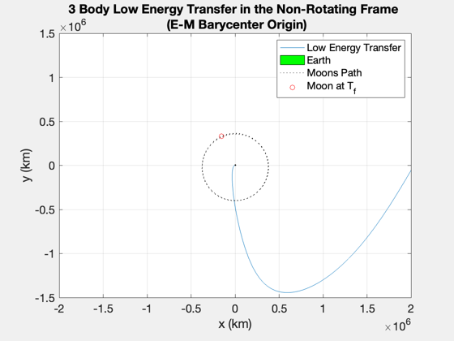 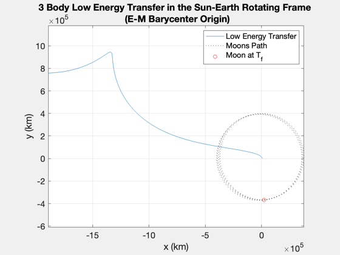 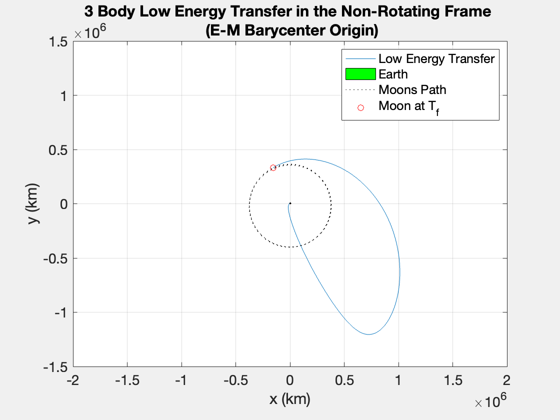 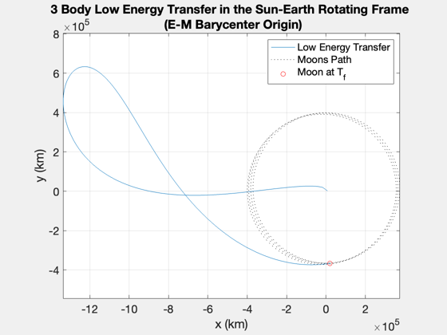 Transfer to 4BP
%---------------- waitbar(.6,h,'LET Status: Transferring to Sun/Earth/Moon System \newline Step 4/5 : Approximately 3 min remaining') fprintf('Performing targeting for the 4 body problem...\n'); elements(1) = r0; % question: is this the right way to shift from barycenter to planet-centered dV1EphNew = dV1New; debugData.pre4BP.elements = elements; debugData.pre4BP.dV1Eph = dV1EphNew; figH3 = PlotLET(elements,dV1EphNew,dtTarg,jDate); set(figH3(1),'name',strcat(get(figH3(1),'name'),' BEFORE')) set(figH3(2),'name',strcat(get(figH3(2),'name'),' BEFORE')) moonSteps=6; % A Posteriori, at this time. 6 runs in 471 seconds. 5 doesn't converge. elements4BP=elements; dV14=dV1EphNew; for moonStepFraction=0:1/(moonSteps-1):1 PlotLET(elements4BP,dV14,dtTarg,jDate,moonStepFraction); [elements4BP,dV14] = Targeting4BP(elements4BP,dV14,dtTarg,0,p,jDate,moonStepFraction);% Ease from 4BP without Moon into 4BP end figH4 = PlotLET(elements4BP,dV14,dtTarg,jDate); % remove handle set(figH4(1),'name',strcat(get(figH4(1),'name'),' AFTER')) set(figH4(2),'name',strcat(get(figH4(2),'name'),' AFTER')) debugData.post4BP.elements = elements4BP; debugData.post4BP.dV1Eph = dV14;
Performing targeting for the 4 body problem...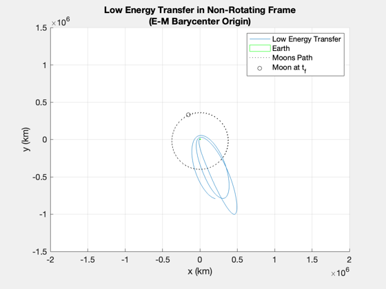 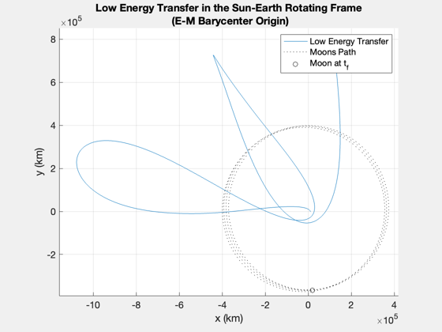
 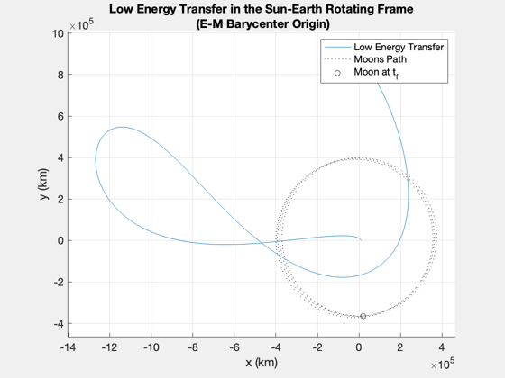 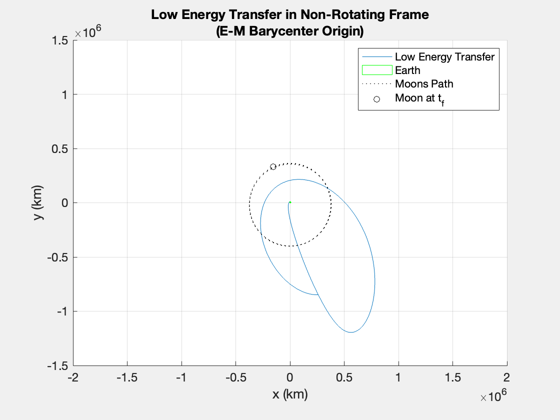 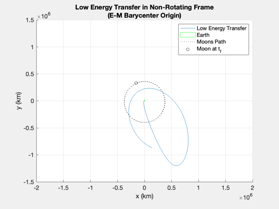 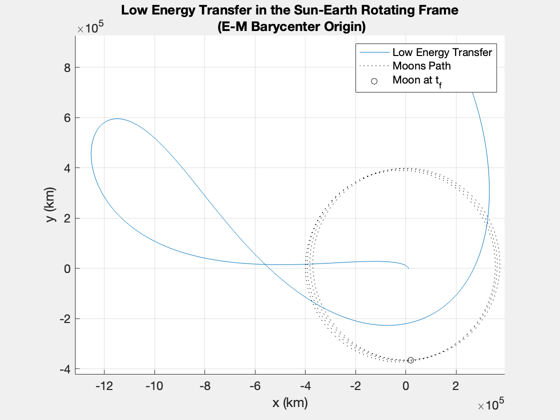 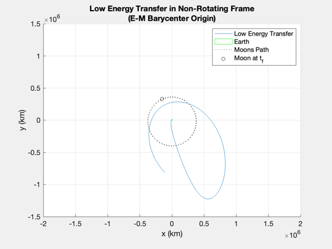 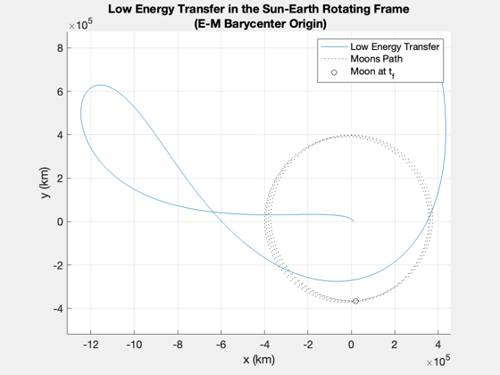 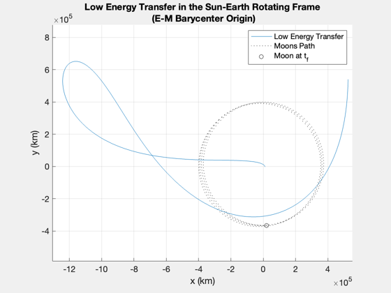 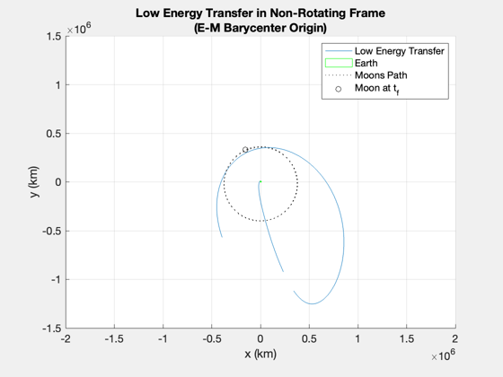 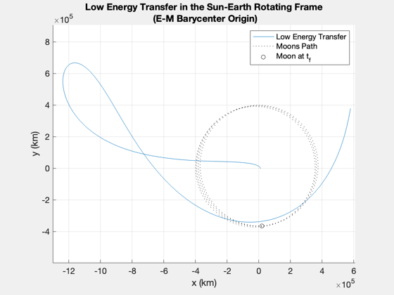 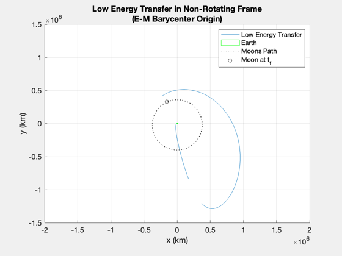 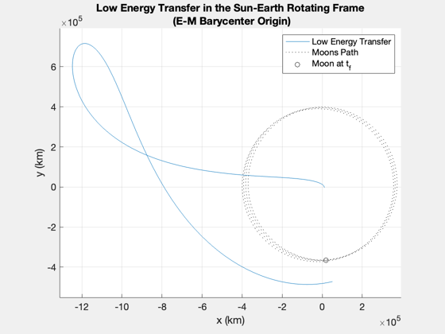
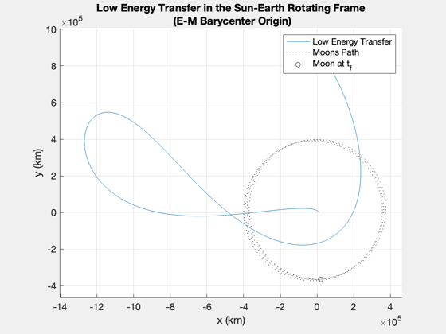 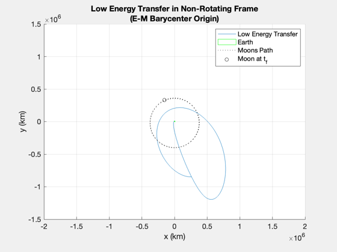 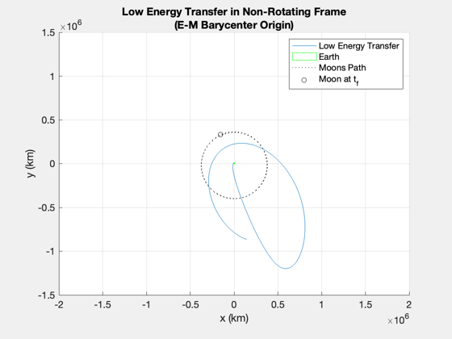 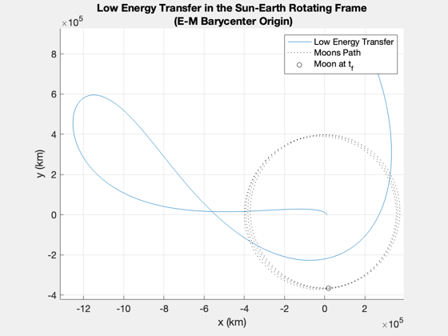 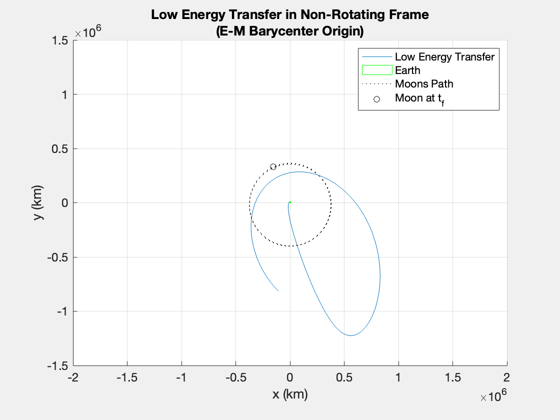 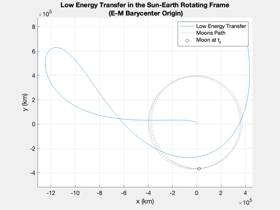 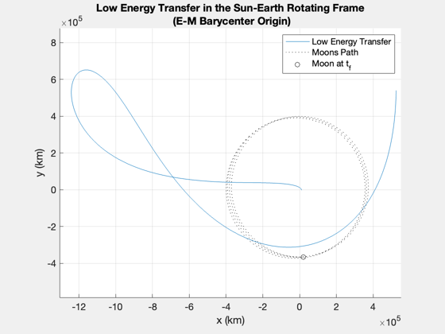 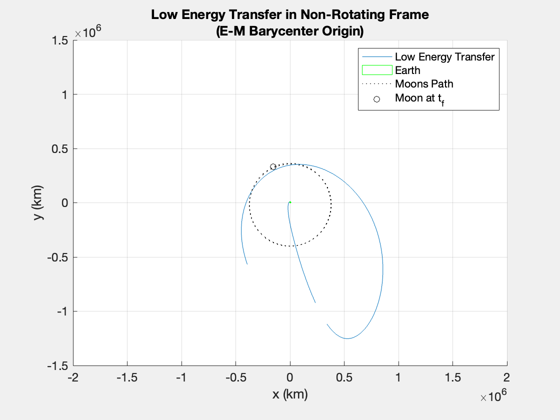 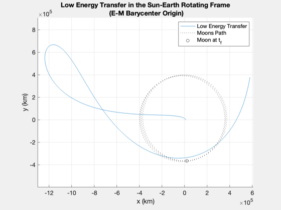 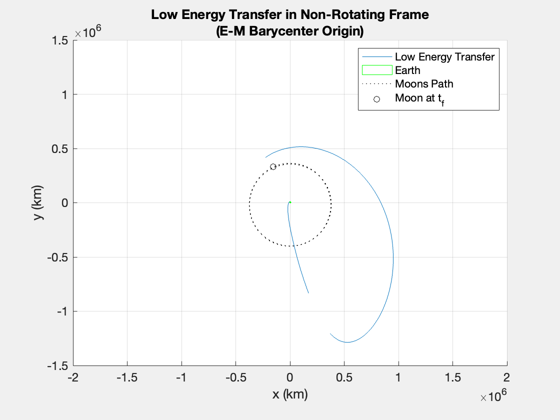 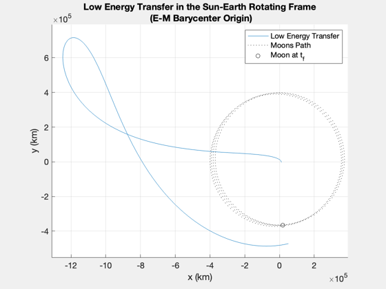 Minimize energy wrt the moon in 4bp
%------------------------------------ waitbar(.8,h,'LET Status: Minimizing Energy \newline Step 5/5 : Approximately 1.5 min remaining') debugData.preMin.elements = elements4BP; debugData.preMin.dV1Eph = dV14; [elements,dV1Eph,det,f,jTraj,jL2] = MinE4BP(elements4BP,dV14,dtTarg,0,muMoon,p,jDate); waitbar(1,h,'LET Status: Complete') debugData.postMin.elements = elements; debugData.postMin.dV1Eph = dV1Eph; debugData.postMin.dt = det; PlotLET(elements,dV1Eph,det+5*86400,jDate);
Exiting: Maximum number of iterations has been exceeded
- increase MaxIter option.
Current function value: -0.057933
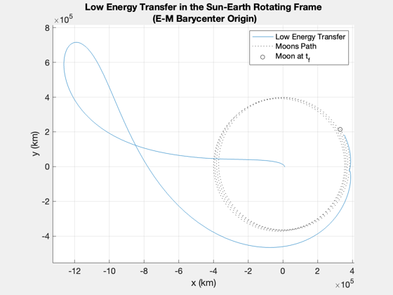 Store the results
LETTrans = struct; LETTrans.elements = elements; LETTrans.initialStateJ2000 = El2RV(elements,1e-14,muPlanet); LETTrans.maneuver = dV1Eph; LETTrans.timeOfFlight = det; LETTrans.finalEnergy = f; LETTrans.family = family; LETTrans.muMoon = muMoon; LETTrans.muPlanet = muPlanet; LETTrans.cTraj = jTraj; LETTrans.cL2 = jL2; LETTrans.burns = 1; close(h) toc(tRun) if( saveFiles ) save([mfilename,'_',datestr(now,'yyyy-mm-dd--HH-MM-SS')]) end %-------------------------------------- % $Id: 4ccfcadad9698c2abf92b71996495c7ed58184f4 $
Elapsed time is 94.885703 seconds.